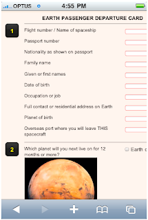
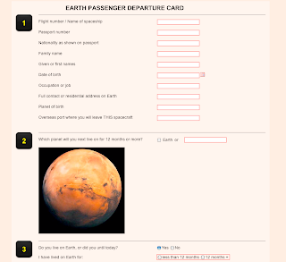
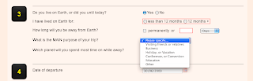
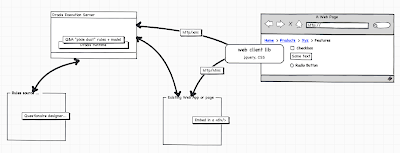

Introducing a new smart forms tool: Drools Advisor
 A new tool is in the works that we are currently code naming Advisor (open to other ideas ? perhaps Smart Forms?). This idea came about on talking with the good folks at Solnet Solutions in New Zealand (NZ is also known as Middle Earth !) – they had a need to create Questionnaire style form apps quickly – which were generated dynamically, entirely from writing rules (so they could quickly change, and roll out new apps etc). This was a forms engine with a few twists, and sounded very interesting…
A new tool is in the works that we are currently code naming Advisor (open to other ideas ? perhaps Smart Forms?). This idea came about on talking with the good folks at Solnet Solutions in New Zealand (NZ is also known as Middle Earth !) – they had a need to create Questionnaire style form apps quickly – which were generated dynamically, entirely from writing rules (so they could quickly change, and roll out new apps etc). This was a forms engine with a few twists, and sounded very interesting…
In the last couple of months Solnet have been beavering away on this tool, which will be open sourced soon. There are a few components to it, but first lets look at some samples:
1) “Earth departure card”:
(iPhone)


2) Tax calculator:
To get the above to work in this tool, only a few things were needed: 1) Some rules to express the question logic, 2) CSS styles to make the forms look how you want (everything is style-able) – to fit in with a given look. Its not just dumb form fields either, there are lots of things you can do, the questions can be quite complex structures etc..
If you were writing rules by hand, they would take the form of:
when
#some conditions go here, or none if you like
then
Question question = new Question();
question.setId("flight");
question.setAnswerType("text");
question.setPreLabel("Flight number / Name of ship");
insertLogical(question);
In the condition part – you do whatever you normally do. If there is no condition part, then obviously it executes. In the RHS is where it is interesting: the tool provides some built in model classes which allow you to “ask questions”.
You can then use the answers to that question to drive further questions, and so on (creating a chain of logic, like a decision tree) – so it is intelligently asking the user more questions depending on the answers received. (Truth maintenance – logical assertions, are very useful here, as the user could change an answer, and then the items in the “subtree” below it are no longer needed, and will be retracted automatically):
rule "next country"
when
Question(id == "stayingInNZ", answer != "true");
then
Question question = new Question();
question.setId("countryNext");
question.setAnswerType("text");
question.setPreLabel("or");
insertLogical(question);
end
The above says that when the “stayingInNZ” question is answered (to “not true”) then ask them for another country etc…

(by clicking on “Yes” radio button, other questions are revealed – this happens via ajax – talking to the server as the user enters data, executing rules etc).
There are a few components at work: A web front end (based on jQuery) and the Advisor logic itself (which, no surprise, is implemented itself in rules). Obviously this isn’t locking it in to web front ends (so you could have other front ends or systems answering questions, not just a user via a web browser).

My sketch above tries to convey the different parts. The Advisor logic lives on the server – hosted in the new “execution server” (more on that in a future post) which is a web server that talks XML to a stateful knowledge session (and of course the Advisor is a model + rules itself). In the web case, the “client” is a javascript library, using jQuery that renders questions based on responses from the knowledge session.
This “client” is generic, and can be hosted in any web page or app (doesn’t require java) – it can “hang” off a html “div”. CSS provides styling for all controls/fonts/colours (I even saw an example where a slider was used to provide a numeric value).
“Pixie Dust”: As we were designing this, we realised most of the logic can and should be implemented in built in rules – we affectionately called these “pixie dust” rules – not meant to be edited or viewed by end users, but they do the magic behind the scenes.
There is much more that is possible: for instance mapping from the “answers” coming back from a user to a pojo which you use in your business rules (so you can use the Q&A stuff as a means to request for more data when needed).
Why this is interesting: using rules and truth maintenance to establish chains of logic allows large Q&A apps to be developed that intelligently ask for more data as needed (eg when evaluating someone for life insurance). Of course, there are features built in such as Groups, which allow more traditional “form” and “page” style behavior that people will expect (much more then can be shown here) – and you have the full power of all the normal things you might want to do with Drools.
Next steps: One of the key aims is to have a domain specific GUI in Guvnor to assist with building these apps end to end (guiding the user to make it as easy as is possible) – and adding the Advisor “pixie dust” to any set of rules, and running these apps (and deploying etc..).
I hope this is an interesting introduction, there is more to come…

{kind=link}
{kind=link}
{kind=link}
{kind=link}
{kind=link}